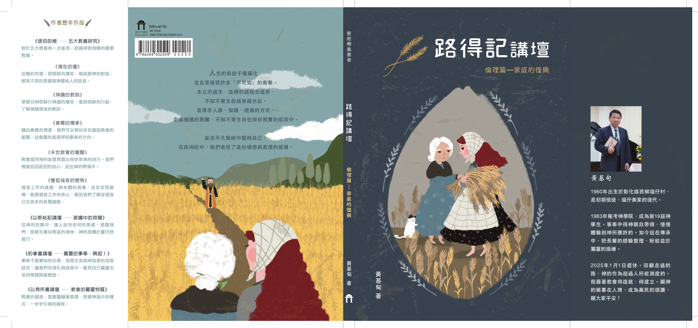
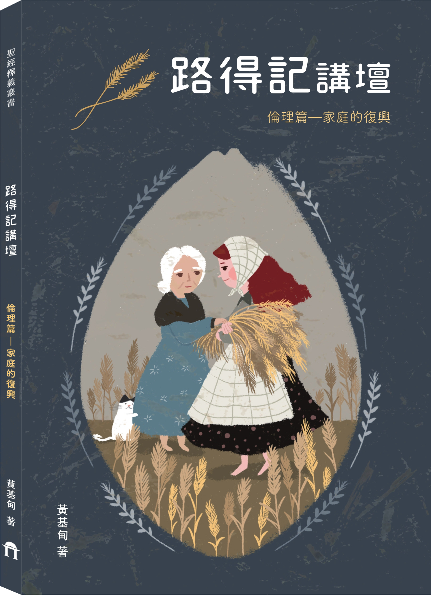
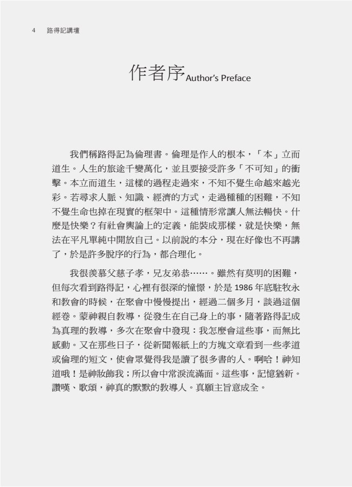
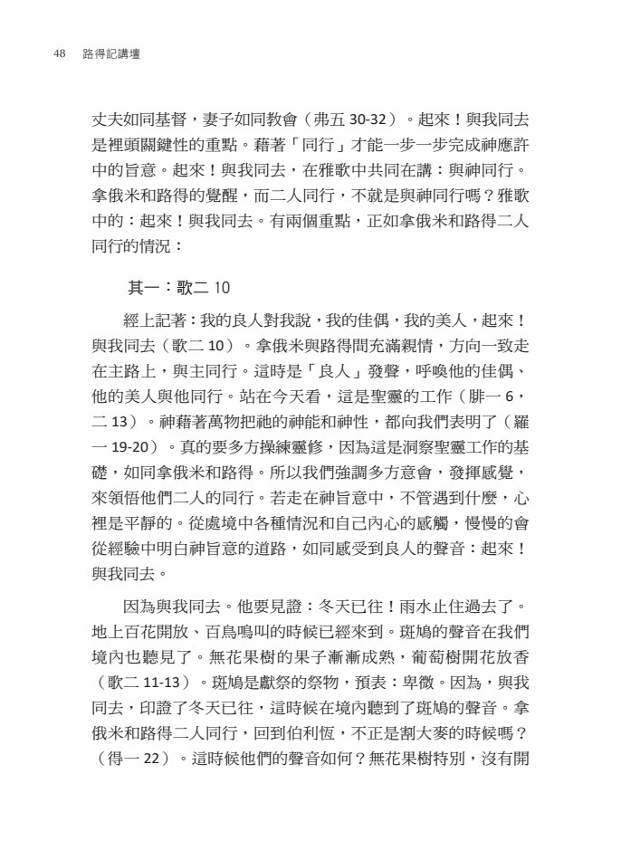
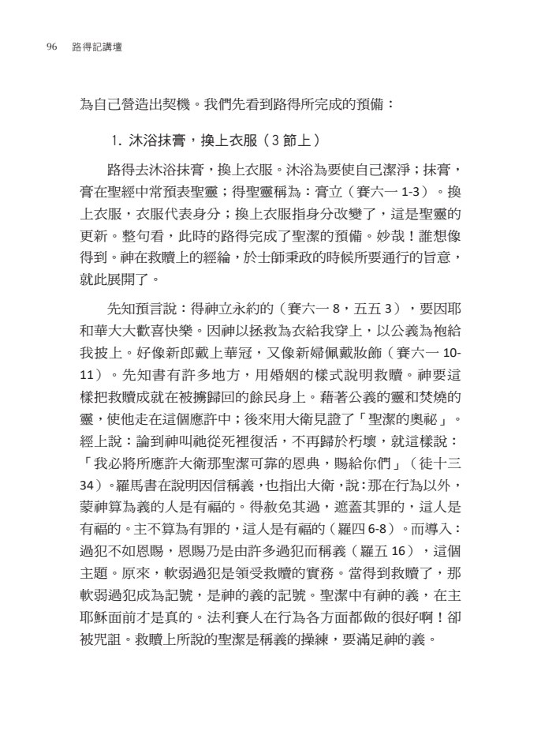
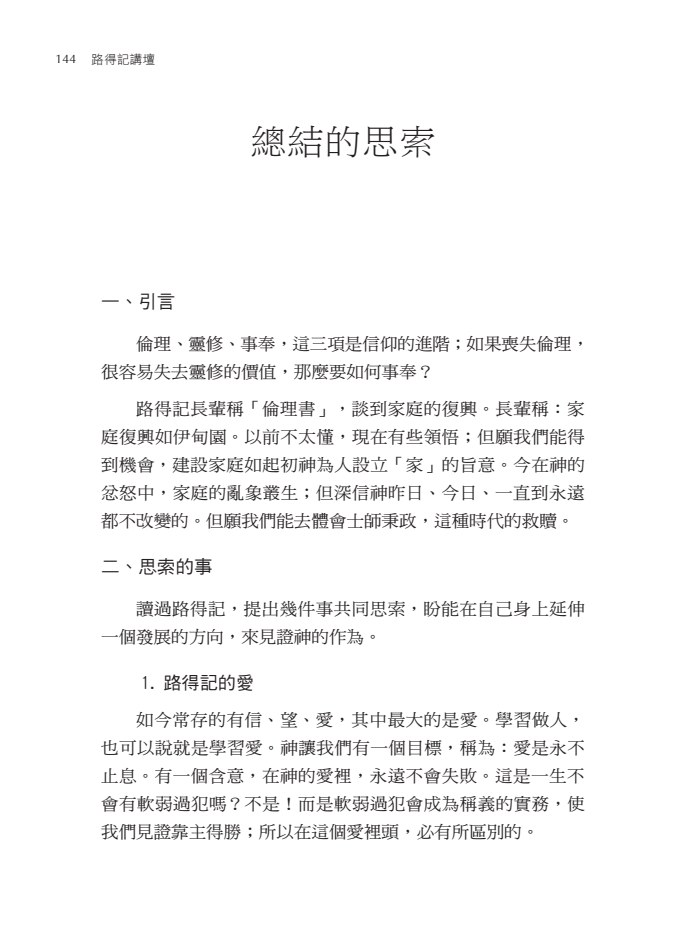
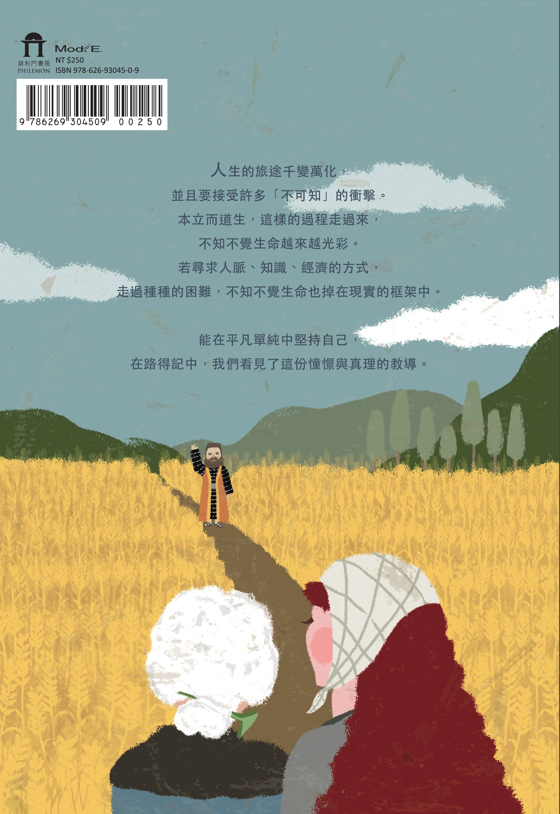

一起來讀路得的故事
《路得記講壇》把路得記視為一卷關於倫理的書，從婚姻、家庭、 同行、祝福，到最後的總結思索，整理出一條能落在現實生活中的信仰路線。

Ethics in Ruth
倫理篇｜家庭的復興
如果你正想把婚姻、家庭與信仰次序重新理順， 這本書會用很溫柔的方式，陪你慢慢回到根基。
當人回到神面前守住本分
家庭便從破碎之地重新長出生命。

A gentle invitation
《路得記講壇》把路得記視為一卷關於倫理的書，從婚姻、家庭、 同行、祝福，到最後的總結思索，整理出一條能落在現實生活中的信仰路線。
當婚姻容易疲憊、代間開始緊張、每個人的角色越來越模糊， 這本書會幫你把那些說不清的壓力，重新帶回聖經裡整理。
不論你想安靜地讀，或想送給正在經歷家庭拉扯、服事壓力、 關係修復的人，這本都很有陪伴感。
What this book holds
從作者序出發，重新看見信仰不是抽象口號，而是人站立的次序。
全書把路得記的救贖脈絡，帶回婚姻關係、家庭角色與同行責任。
不是逃避現實，而是在不確定中，仍然選擇忠誠、次序與盼望。
Why read this book
「倫理是作人的根本，本立而道生。」
「本立而道生，這樣走過來，不知不覺生命越來越光彩。」

「起來！與我同去。」
「藉著『同行』，才能一步一步完成神應許中的旨意。」

「沐浴抹膏，換上衣服。」
「原來，軟弱過分是領受救贖的實務。」

「倫理、靈修、事奉，這三項是信仰的進階。」
「如果喪失倫理，很容易失去靈修的價值。」


From the back cover
一時風風雨雨，我們再次閱讀來整理自己， 盼望總會回來的。